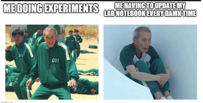

It’s all fun and games until your adviser asks if you’ve updated your lab notebook!
| Date | Title | Author |
|---|---|---|
| Mar 20, 2026 | Mussel Methylation Analysis Return | |
| Mar 19, 2026 | Integrating Epigenetic Mechanisms | |
| Mar 18, 2026 | Chromatin’s Turn to Shine | |
| Mar 17, 2026 | UW-RUA Tuesday | |
| Mar 16, 2026 | Celeste!!!!!! & Histones | |
| Mar 15, 2026 | Epigenetic Mechanisms- More Notetaking | |
| Mar 14, 2026 | Epigenetic Mechanisms | |
| Mar 13, 2026 | Resting & Reading | |
| Mar 12, 2026 | No Science | |
| Mar 11, 2026 | No Science - Still Sick | |
| Mar 10, 2026 | No Science - UW-RUA Tuesdays | |
| Mar 9, 2026 | Setting Up the Week | |
| Mar 8, 2026 | No Science | |
| Mar 7, 2026 | No Science | |
| Mar 6, 2026 | No Science | |
| Mar 5, 2026 | No Science | |
| Mar 4, 2026 | Groundhog Day X 1000 | |
| Mar 4, 2026 | Groundhogs Day Times A Thousand | |
| Mar 3, 2026 | UW-RUA Traveler Tuesday | |
| Mar 2, 2026 | Getting Back on Track | |
| Mar 1, 2026 | March Goals | |
| Feb 1, 2026 | 2026 February Daily Posts | |
| Jan 1, 2026 | 2026 January Daily Posts | |
| Dec 1, 2025 | 2025 December Daily Posts | |
| Nov 1, 2025 | 2025 November Daily Posts | |
| Oct 1, 2025 | 2025 October Daily Posts | |
| Sep 1, 2025 | 2025 September Daily Posts |
No matching items